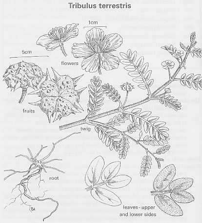

Tribulus terrestris
Linn.
Taxonomic Details

----- Correct Name
----- Classification
----- Synonyms
----- Common Names
Other
Biological Details
----- Habit and
Habitat
----- Diagnostic
Features
----- Reproductive
Biology
---------- Breeding
System
---------- Phenology
---------- Pollinators
----------
Seed Biology
----------Seed Germination
------ Cultivation
----- Major
Pests and Diseases
Economic
Potential and Uses
----- Parts Used
-----
Uses
----- Harvesting
Practices
----- Produce
and Products
----- Chemistry
----- Processing
Techniques
----- Other uses
----- Economic
Potential to the Country
----- Export
Potential
Miscellaneous
Information
Literature
Taxonomic
Details
Correct Name : Tribulus
terrestris Linn.

Family :Zygophyllaceae
Synonyms :Tribulus lanuginosus
Common Names :
English: Ground bur - nut,Puncture Vine
Sanskrit: Gokshura. Iksliugamlha
Hindi: Gokhru, Gokshri, Hatechanghara
Bengali: Gakhura, Gokshra;
Malayalam: Nerunji, nerinjeekai (Fruits);
Marati: Laliango-khru, Sarala, Sharatte
Tamil: Nerunji, Nerinjeekai (Fruits);
Telugu: Chinnipalleru, Chirupalleru, Palleru-kayalu (fruits);
Kannada: Sanna neggilu.
Back to Top
Other
Biological Details
HABIT & HABITAT :
.jpg)
A variable, prostrate
annual, up to 90 cm. in length, commonly found throughout India, up to an altitude
of c 5,400 m. along railway lines, Coastal areas, Cultivated fields, Cultivated fields
and Plains, Dry Open areas, dry place, Foothills, Gardens and Roadsides,
Gravely plains, Plains, Road sides, Rock crevices, Sandy, Tanks &
rivers, waste fields, waste land,
Availability :
BioticZone: Konkan plain, Plains and Tropics.
Soil: Gravelly soil and Sandy loam.
Misc: Amreshwar, Banglibetta-Devarayanadurga, Bankaldoddi Reserve Forest, Bayana,
Burdwan, Burpal road, Chalakere-Molkalmuru Road, Chitradurga-Tumkur Road,
Deolali,
Gulbarga-Humanabad Road, Gulemalleblad, Gunthgola, Indapur, Jogimatti (State Forest),
Karanja, Karanji village, Mahur, Koppal-Kushtagi Road, Lakkihalli State Forest,
Lingsugur-Sindhnur Road, Lodha tank, maddipenta, Madhavaram, Mahaballeshwar, Mahan,
Maliyabad, Manasagangotri, Mangaon, Manjira Barrage, Manmad, Naka, Nayaydongri,
Niwai, Paliwal Park, Paloda, Palodi, Patur, Plains, Sabargadga, Shergarh,
Shrivardhan, Sitanadi, Throughtout India, Tingri, Tirthrampura State Forest, Vasthanji and
Waddarchap.
Country: Australia, Ceylon, India, Sri Lanka, Tibet, Tropical Africa and Tropical
Countries.
Zone: Central, East, North, North East, South and West zone.
State: Andhra Pradesh, Bihar, Himachal Pradesh, Jammu & Kashmir, Karnataka,
Madhya Pradesh, Maharashtra, Rajasthan, Tamil Nadu, Uttar Pradesh and West Bengal.
District: Agra, Ajmer, Akola, Bangalore, Bankura, Banswara, Belgaum, Bellary,
Bidar, Bijapur, Champaran, Chandrapur, Chikmaglore, Chitradurga, Dharmapuri,
Dungarpur, Gulbarga, Hassan, Hoshangabad, Indore, Jaisalmer, Kashmir, Kinnaur,
Kodagu, Kolar,
Kota, Kurnool, Lahaul Spiti, Medak, Mysore, Nasik, Purulia, Raichur, Raigad,
Raipur,
Salem, Satara, Satna, Sawai Madhopur, Sidhi, Simla, Sirohi, South Arcot,
Tikamgarh, Tiruchi, Tonk, Tumkur and Yawatmal.
Status :
Back to Top
DIAGNOSTIC FEATURES :
Roots slender, cylindrical, somewhat fibrous, 10-15 cm. long, light brown and
faintly aromatic; leaves paripinnate : leaflets 5-8 pairs, subequal, oblong
to linear-oblong; flowers leaf-opposed, solitary, pale-yellow to yellow; fruits
globose, consisting of 5-12 woody cocci, each with 2 pairs of hard, sharp, divaricate
spines, one pair longer than the other; seeds several in each coccus with transverse
partitions between them.
Back to Top
REPRODUCTIVE BIOLOGY :
The herb is a common weed, springing up everywhere soon after the first showers.
The weed is reported to be controlled by spraying 2,4-D.
Breeding System :
Cytological examination
of the plants, it has been estimated that the basic number of Intra-specific
variations with short style and long style are met with. On the basis of chromosome
of the species is six. Polyploids with 2n chromosome number 24, 36, and 48 have
been reported from various localities
Phenology
:The herb flowers and fruits almost throughout
the year. The flowering starts within 20-35 days, and the fruit matures in 14
days after the formation of seed. Generally January - April and in some
places it will be during May-December.
Pollinators:
Seed Biology :
Seed Germination:
Cultivation:
We have very little information on this species and are not sure how successful
it will be in Britain. There are conflicting reports on its hardiness - according
to one report it is native to N. France which should make it hardy in Britain
whilst another report says that it is only hardy in zone 10 which means that
it is not frost tolerant. We would suggest treating it as a frost tender
annual and then experimenting with its hardiness. It is likely to require a
well-drained dry to moist soil and is also likely to be tolerant of maritime
exposure.
The plant is very fast growing from seed. A
good bee plant.
Propagation
Seed - sow spring in a greenhouse. When they are large enough to handle, prick
the seedlings out into individual pots and plant them out after the last expected
frost.
Back to Top
MAJOR PESTS & DISEASES
Pests:
Diseases:
Back to Top
Economic
Potential and Uses
Parts used :
Leaves,
Tender shoots and fruits.
Uses
-
The leaves and tender shoots are used by the poorer class as a potherb, either
alone or mixed with other herbs.
- The flour from the fruits is made into a bread
and eaten during the times of scarcity.
- The herb
is also used as fodder. The green plant at the post floral stage is highly palatable
to stock
Harvesting
Practices :
About 1.85 tones of the drug (fruits, roots
and occasionally the entire plant) are reported to be collected from Saharanpur
in Uttar Pradesh.
Produce and Products
Back to Top
Chemistry :
An analysis
of green leaves gave the following values : moisture, 79.09; protein, 7.22; ether
extr., 0.54; total ash, 4.63; calcium, 1.55; and phosphorus, 0.08 ; iron, 9.22;
and vitamin C, 41.53 mg./ lOO g. They are rich in calcium and poor in iron, and
are valuable as cheap supplements to rice-diets in South India, adding to the
compensatory value of mixed greens.
The herb
is also used as fodder. The green plant at the post-floral stage is highly palatable
to stock; it is rich in calcium and contains (dry basis) : crude protein, 12.06;
ether extr., 2.61; crude fiber, 27.78; N-free extr, 40.83; total ash, 16.72; calcium,
4.21; and phosphorus, 0.25; dig. crude protein, 9.07; and total dig. nutrients,
55.63%. In feeding trials on sheep, the animals gave a high nitrogen and calcium
retention, and a marginally positive phosphorus retention. Dried plant at young
(pre-flowering) stage was refused by the animals.
Back to Top
Processing Techniques
Back to Top
Other Uses :
-
The seed is abortifacient, alterative, anthelmintic, aphrodisiac, astringent,
carminative, demulcent, diuretic, emmenagogue, galactogogue, pectoral and
tonic. It stimulates blood circulation. A decoction is used
in treating impotency in males, nocturnal emissions, gonorrhoea and incontinence
of urine. It has also proved effective in treating painful urination,
gout and kidney diseases.
- The plant has shown anticancer activity.
- The flowers are used in the treatment of
leprosy.
- The stems are used in the treatment of scabious
skin diseases and psoriasis.
- The dried
and concocted fruits are used in the treatment of congestion, gas, headache,
liver, ophthalmia and stomatitis.
- The fruit infusion is useful in gout, cooling agent, urinary
disorders and impotency
Back to Top
Economical
Potential to the country
Back to Top
Export Potential
Back to Top
Miscellaneous
Information
Back to Top
Literature
- Kirtikar and Basu's Illustrated flora of Indian
Medicinal Plants 2 K.S.Mhaskar, E.Blatter, J.F.Caius,2000,Library,JNCASR,Bangalore.
- The Wealth of India. Raw Materials, Vol X : Sp-W; 1976,
p 283 -284. CSIR. New Delhi, India.
Back to Top